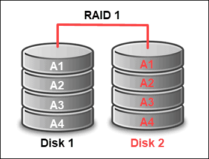
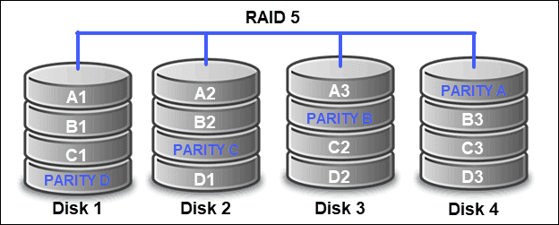
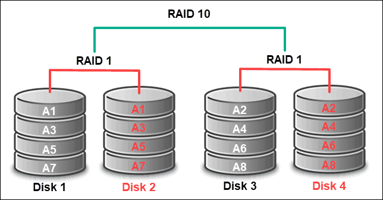
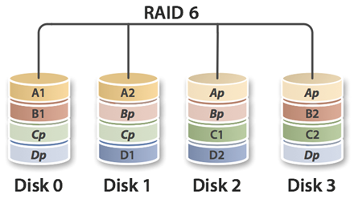
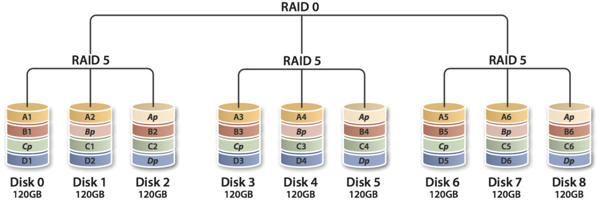

Poziomy RAID
RAID 0

RAID 0, czyli striping, dzieli dane równomiernie między dwa lub więcej dysków. Celem jest zwiększenie wydajności odczytu i zapisu.
Zalety:
- Większa wydajność odczytu i zapisu
- Pełne wykorzystanie mocy dysków
- Łatwy do wdrożenia
Wady:
- Brak odporności na awarię
RAID 1
RAID 1, czyli mirroring, kopiuje dane jednocześnie na dwa dyski. Każdy dysk ma dokładną kopię.
Zalety:
- Odporność na awarię
- Szybszy odczyt danych
- Łatwy do wdrożenia
Wady:
- Wykorzystywana jest tylko połowa pojemności dysków
RAID 5
RAID 5 używa stripingu i parzystości. Wymaga co najmniej 3 dysków.
Zalety:
- Szybki odczyt danych
- Odporność na awarię
- Dostęp do wszystkich danych
Wady:
- Dłuższy czas odzyskiwania danych
- Trudniejsza konfiguracja
RAID 10
RAID 10 łączy RAID 0 i RAID 1, wymaga co najmniej 4 dysków.
Zalety:
- Wysoka wydajność
- Odporność na awarie
- Szybkie odzyskiwanie danych
Wady:
- Drogi
- Połowa pojemności wykorzystana
- Trudniejsza konfiguracja
RAID 6
RAID 6 to rozszerzenie RAID 5, które używa podwójnej parzystości. Wymaga co najmniej 4 dysków i może tolerować awarię dwóch dysków jednocześnie.
Zalety:
- Odporność na awarię dwóch dysków
- Dobry odczyt danych
Wady:
- Wolniejszy zapis niż RAID 5
- Trudniejsza odbudowa macierzy
RAID 50
RAID 50 łączy striping RAID 0 oraz parzystość RAID 5. Wymaga co najmniej 6 dysków. Zapewnia wysoką wydajność oraz lepszą odporność na awarie niż RAID 5.
Zalety:
- Wysoka wydajność
- Odporność na awarie jednego dysku w każdej grupie RAID 5
- Lepszy zapis niż RAID 6
Wady:
- Droższy od RAID 5
- Złożona konfiguracja
RAID 60

RAID 60 łączy striping RAID 0 oraz podwójną parzystość RAID 6. Wymaga co najmniej 8 dysków. Może tolerować awarię dwóch dysków w każdej grupie RAID 6.
Zalety:
- Bardzo wysoka odporność na awarie
- Dobra wydajność
- Najlepsze zabezpieczenie przy dużych macierzach
Wady:
- Bardzo drogi
- Wolniejszy zapis niż RAID 50
- Złożona konfiguracja
Różnica między sprzętowym a programowym RAID
Istnieją dwa sposoby używania RAID: sprzętowy i programowy. W przypadku sprzętowego RAID przetwarzanie odbywa się na zewnętrznym CPU z użyciem kontrolera RAID. W przypadku programowego RAID przetwarzanie odbywa się na procesorze hosta.
Przykład:
- W przypadku sprzętowego RAID wstawiasz kartę kontrolera RAID do szybkiego slotu PCI-Express na płycie głównej i podłączasz do dysków.
- W przypadku programowego RAID bez użycia kontrolera RAID, zarządzasz dyskami za pomocą oprogramowania systemowego.
Wszystkie poziomy RAID, z wyjątkiem RAID 0, zapewniają ochronę przed awarią jednego dysku. Dla bezpieczeństwa nadal należy tworzyć kopie zapasowe danych.